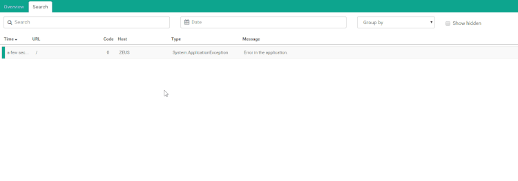

Logging custom data
ELMAH stores a lot of contextual information when an error occurs. Things like cookies, stack trace, server variables and much more are stored to ease debugging the error at a later point in time. Most error log implementations for ELMAH doesn't support custom variables. Luckily, this is not the case for the elmah.io client.
Let’s look at some code. You have two options of decorating your errors with custom variables.
Use the Data dictionary on .NET’s Exception type
I talk to a lot of developers and not all of them know about the wonderful world of the Data dictionary. All exceptions in .NET contains a property named Data and of type IDictionary. The Data dictionary is intended for user-defined information about the exception. The elmah.io client iterates through key/values in this dictionary and ship it off to elmah.io’s API. To log custom data using Data, just add a new key/value pair to the Data dictionary:
try
{
CallSomeBusinessLogic(inputValue);
}
catch (Exception e)
{
e.Data.Add("InputValueWas", inputValue);
ErrorSignal.FromCurrentContext().Raise(e);
}
In the example I add a custom variable named InputValueWas with the value of the inputValue variable. This way I will be able to see which input value caused the exception.
Use the OnMessage hook in the elmah.io client
You may not use ELMAH’s ErrorSignal feature, but rely on ELMAH to log uncaught exceptions only. In this scenario you probably don’t have access to the thrown exception. The elmah.io client offers a hook for you to be able to execute code every time something is logged:
Elmah.ErrorLog.GetDefault(null); // Forces creation of logger client
var logger = ErrorLog.Client;
logger.OnMessage += (sender, args) =>
{
if (args.Message.Data == null) args.Message.Data = new List<Item>();
args.Message.Data.Add(new Item { Key = "SomeOtherVariable", Value = someVariable });
};
You may not have seen the Logger type of elmah.io before, but what’s important to know right now is, that Logger is responsible for logging messages to the elmah.io API. Another new term here is Message. A message is the type encapsulating all of the information about the thrown exception.
In the code example I subscribe a new event handler to the OnMessage event. This tells the elmah.io client to execute your event handler, before actually logging an exception to elmah.io. I use the event to add a custom variable to the Data dictionary of the message logged to elmah.io.
Looking at your custom data
Logging custom data doesn’t really make anything easier, unless you have a place to show them. Luckily for you, we have thought about that and now offers a new tab on the error details:

Like the content in the other tabs of the error details, you will be able to filter results by the variable key.
Searching custom data
Custom data is not searchable by default. Sometimes it makes sense, that errors can be searched from values logged as part of custom data. For now, this feature is supported through the use of variable naming, but we may extend this to a configuration option through the UI as well.
To make a custom variable and its value searchable through the UI (as well as through the API), name the variable with the prefix X-ELMAHIO-SEARCH-. The variable will become searchable through the name added after the prefix.
Example:
Elmah.ErrorLog.GetDefault(null);
var logger = ErrorLog.Client;
logger.OnMessage += (sender, args) =>{
if (args.Message.Data == null) args.Message.Data = new List<Item>();
args.Message.Data.Add(new Item { Key = "X-ELMAHIO-SEARCH-myVariable", Value = "Some funky value" });
};
would make myVariable searchable using this query:
data.myVariable:funky
Observe how the X-ELMAHIO-SEARCH- prefix is replaced with the data. prefix when indexed in elmah.io.
To avoid someone filling up our cluster with custom data, only the first three variables prefixed with X-ELMAHIO-SEARCH- are made searchable. Also, variables with a value containing more than 256 characters are not indexed.
This article was brought to you by the elmah.io team. elmah.io is the best error management system for .NET web applications. We monitor your website, alert you when errors start happening and help you fix errors fast.